|
5-4-1
|
Curaçao | 0 | - | 2 | Côte d'Ivoire |
4-2-3-1
|
| HT 0-1 | ||||||
|
FIFA World CupThursday 25 June 2026
|
||||||
- Venue
- Philadelphia Stadium
- Attendance
- 68,324
- Referee
- Glenn Nyberg
Substitution61'
L. Comenencia
J. Antonisse
Yellow card75'
J. Bacuna
- 2
Substitution77'
J. Gaari
G. Kastaneer
D. Fonville
T. Noslin
Yellow card83'
G. Kastaneer
- 2
Substitution90'
J. Brenet
S. Sambo
J. Locadia
B. Kuwas
Whistle45+5'
45+5'
Goal7'
N. Pépé
Assist: Y. Diomande
Yellow card35'
N. Pépé
Substitution46'
A. Diallo
C. Inao Oulaï
Goal64'
N. Pépé
Assist: I. Sangaré
- 3
Substitution67'
A. Bonny
O. Diakité
N. Pépé
E. Wahi
Y. Diomande
B. Touré
Substitution77'
F. Kessie
J. Seri
Curaçao | |
|---|---|
Goalkeeper | |
| 1 | E. Room |
Defender | |
| 3 | J. Gaari 77' |
| 5 | S. Floranus |
| 18 | A. Obispo |
| 20 | J. Brenet 90' |
| 24 | D. Fonville 77' |
Midfielder | |
| 7 | J. Bacuna 75' |
| 8 | L. Comenencia 61' |
| 10 | L. Bacuna |
| 21 | T. Chong |
Forward | |
| 9 | J. Locadia 90' |
Substitutes | |
| 2 | S. Sambo 90' |
| 11 | J. Antonisse 61' |
| 13 | T. Noslin 77' |
| 17 | B. Kuwas 90' |
| 19 | G. Kastaneer 77'83' |
Côte d'Ivoire | |
Goalkeeper | |
| 1 | Y. Fofana |
Defender | |
| 2 | O. Diomande |
| 7 | O. Kossounou |
| 13 | C. Opéri |
| 17 | G. Doué |
Midfielder | |
| 8 | F. Kessie 77' |
| 11 | Y. Diomande 67' |
| 15 | A. Diallo 46' |
| 18 | I. Sangaré |
| 19 | N. Pépé 7'35'64'67' |
Forward | |
| 9 | A. Bonny 67' |
Substitutes | |
| 4 | J. Seri 77' |
| 12 | E. Wahi 67' |
| 14 | O. Diakité 67' |
| 24 | B. Touré 67' |
| 26 | C. Inao Oulaï 46' |


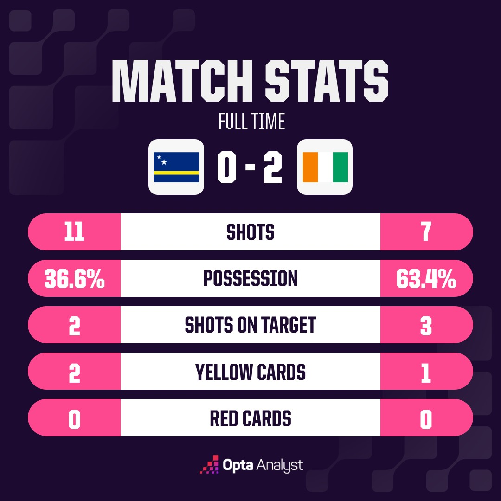
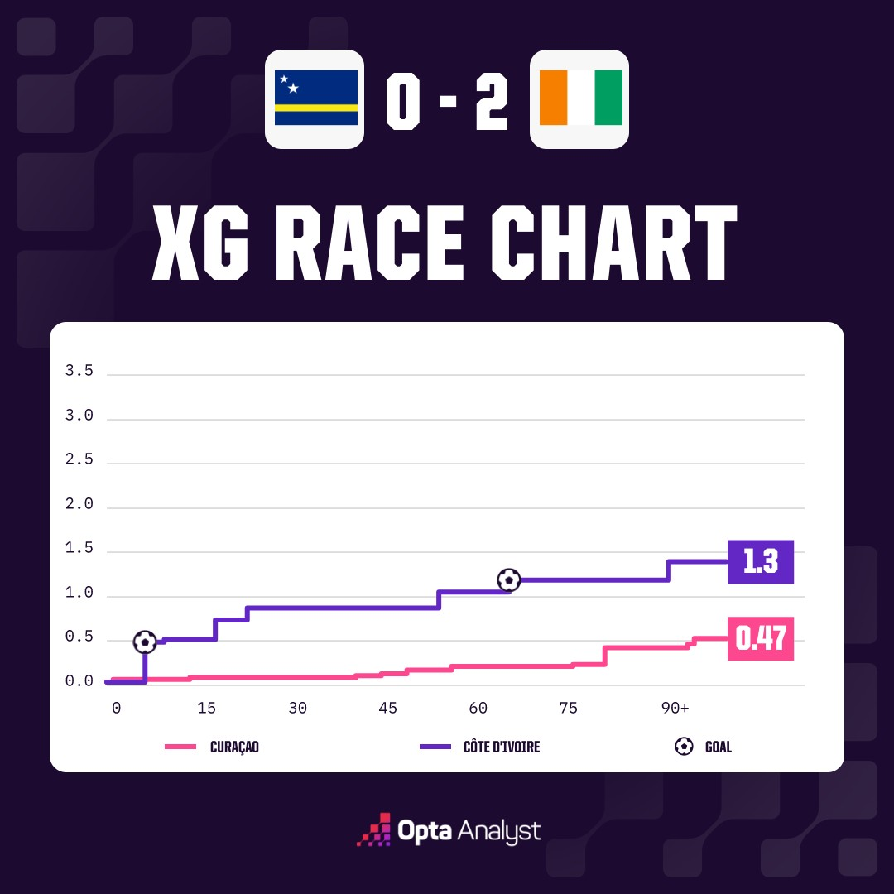
98'
Curaçao have failed to win in their last 3 games in the FIFA World Cup, their longest winless streak in the competition (since at least 1965/1966).
98'
Côte d'Ivoire attempted 7 shots in this game, their lowest total in a single match in the 2026 FIFA World Cup.
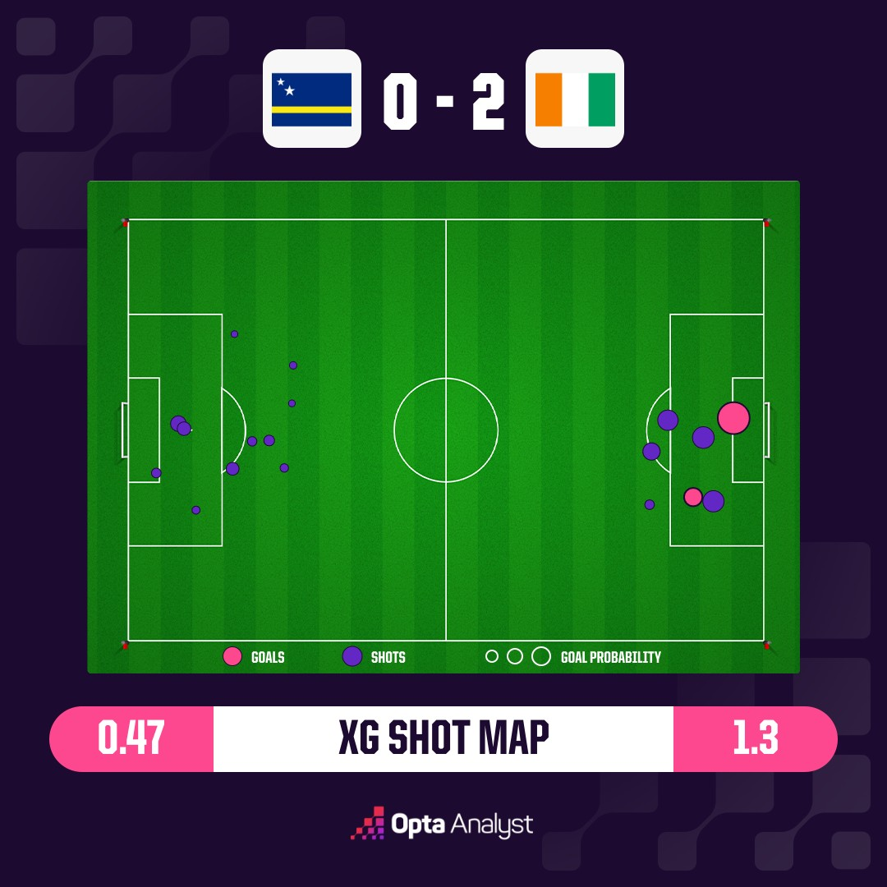
90+7'
That's it! The referee blows the whistle and we have reached full-time. The final score at Philadelphia Stadium is Curaçao 0-2 Côte d'Ivoire.
90+4'
Still behind, but Curaçao are refusing to roll over - defensive urgency rising as they fend off more pressure and push for a late turnaround.
90+3'
BLOCKED! That was close. Jeremy Antonisse got off a shot, which was heading in, but Ousmane Diomande was on hand to make a vital intervention. Great block!
90+3'
No luck – it’s offside! Sherel Floranus looked to dart in behind and get on the end of a pass, yet they just went too early, and the flag is up to signal offside.
90+2'
MISS! The score remains 0-2, with Côte d'Ivoire relieved after Curaçao’s Gervane Kastaneer goes for goal but sends their attempt off target. Not one to write home about, that one.
90+1'
It’s backs to the wall now — Côte d'Ivoire throwing everything into defending their advantage, with a flurry of crucial interventions.
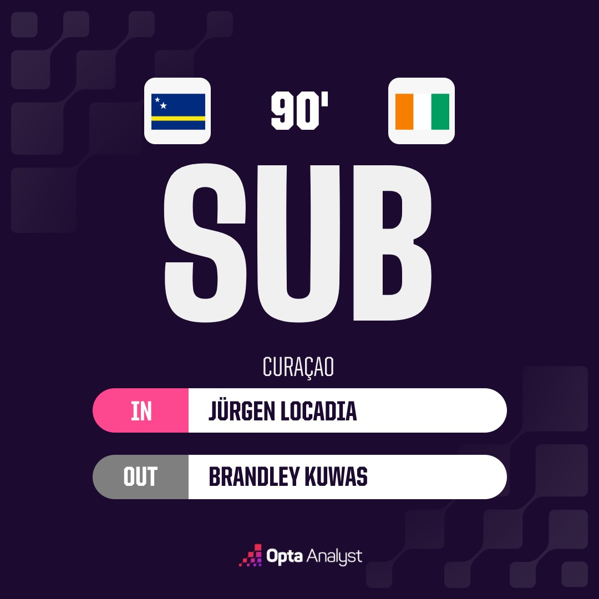
90+1'
Jürgen Locadia’s match is over as Curaçao decide to make a substitution. Brandley Kuwas enters the field in what looks like a tactical change.
90+1'
Substitution! Shurandy Sambo replaces Joshua Brenet for Curaçao as the manager shuffles the pack. Can Shurandy Sambo make an impression as this match continues?
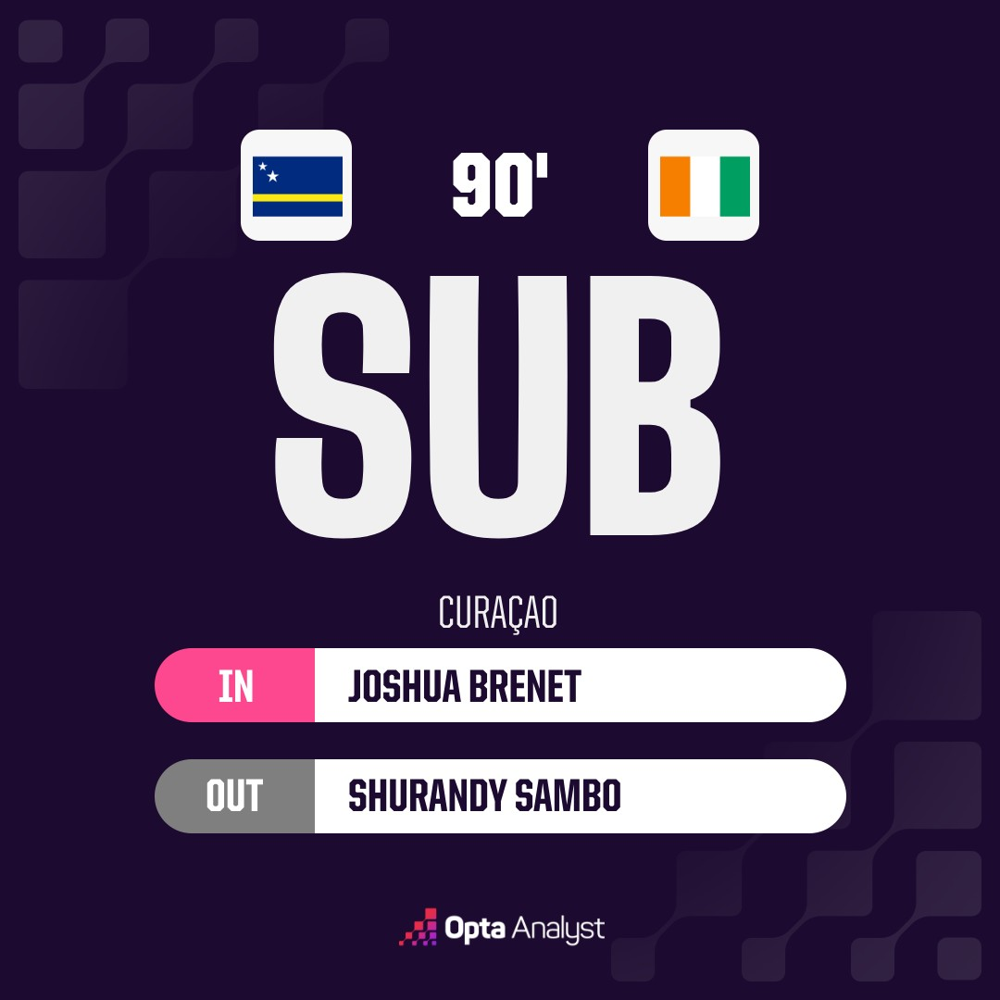
89'
There is plenty of possession for Côte d'Ivoire, with 65.44% compared to Curaçao 34.56 % in the last 15 minutes. However, Côte d'Ivoire have not been able to turn that dominance of the ball into a goal.
89'
What a chance! That should really have been another goal for Côte d'Ivoire, who would have extended their lead had Elye Wahi kept their composure, but instead Curaçao survive that opportunity. Can they make their luck count?
89'
Neither team has had a shot in the past 10 minutes, as this match just enters something of a down period. Côte d'Ivoire have seen more of the ball, with 56 per cent possession, but Curaçao are keeping them away from goal. There is still a chance the match will spark into life, though.
87'
Still behind, but Curaçao are refusing to roll over - defensive urgency rising as they fend off more pressure and push for a late turnaround.
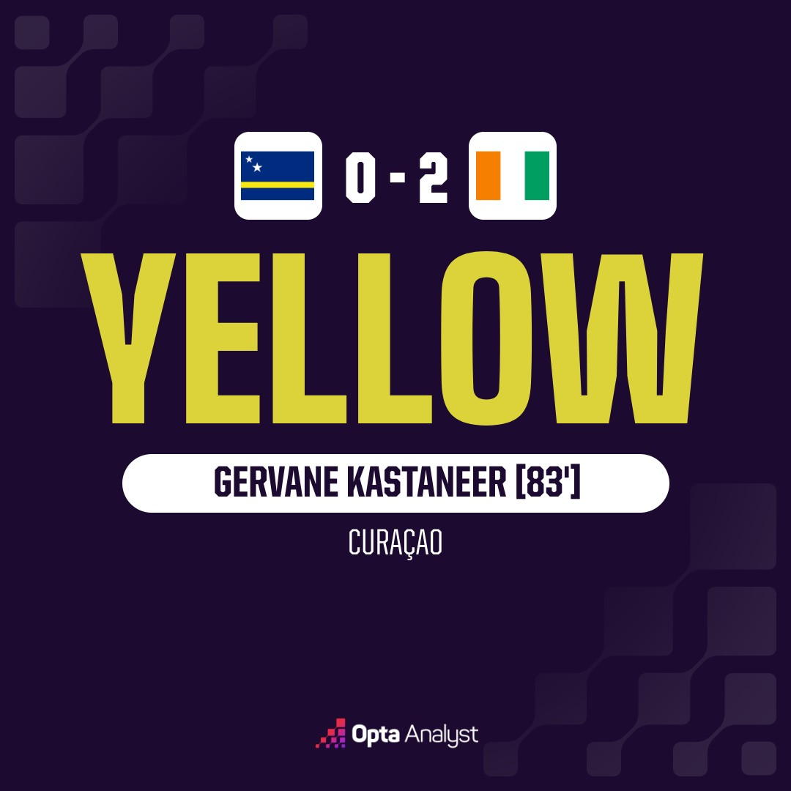
83'
The referee goes to their pocket and pulls out a yellow card, which is brandished in the direction of Gervane Kastaneer. Will they be able to avoid a second booking?
83'
A free-kick to Curaçao, as Christ Inao Oulaï goes in and fouls Tyrese Noslin. However, Côte d'Ivoire will not mind giving one away in this area too much, with plenty of distance to their goal.
81'
There is plenty of possession for Côte d'Ivoire, with 65.56% compared to Curaçao’s 34.44% in the last 15 minutes. However, Côte d'Ivoire have not been able to turn that dominance of the ball into a goal or even a shot during the period – which will be a huge frustration for their coach.
79'
MISS! A shot from Juninho Bacuna ends up being off target. They might have done a bit better with that one, but it remains Curaçao 0-2 Côte d'Ivoire.
79'
No luck! Leandro Bacuna takes on a shot that, had they got it right, might have been set to test the goalkeeper, but instead it is sent off target and Côte d'Ivoire come away unscathed.
78'
Can Curaçao make this chance count? They have won a free-kick in a threatening position after a foul from Christopher Opéri on Tyrese Noslin. Will Côte d'Ivoire's defence be tested here?
77'
The Côte d'Ivoire manager is looking to the substitutes’ bench, bringing on Jean Seri in place of Franck Kessie. Will the change make a difference? Let’s find out!
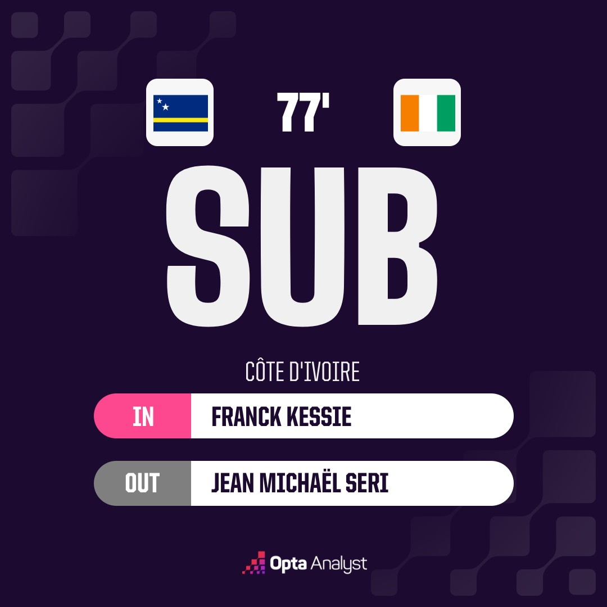
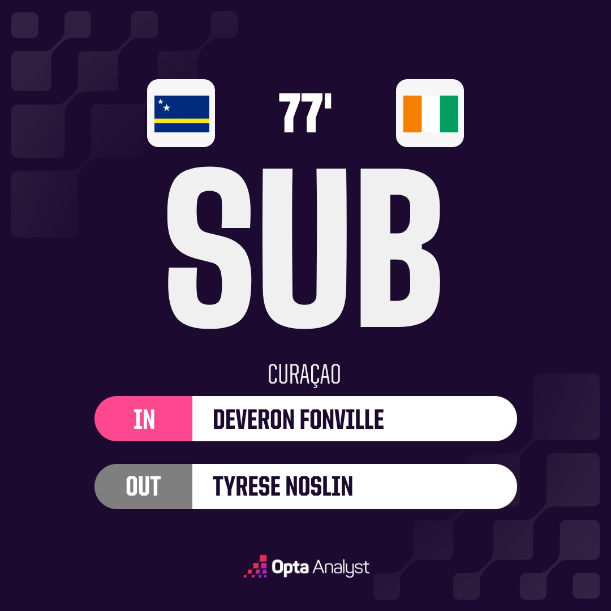
77'
Substitution! Tyrese Noslin replaces Deveron Fonville for Curaçao as the manager shuffles the pack. Can Tyrese Noslin make an impression as this match continues?
77'
Curaçao are making a tactical change. Juriën Gaari is leaving the field and in their place comes Gervane Kastaneer – we will soon see if this switch has the desired impact.
76'
With 15 minutes of normal time remaining, it is Côte d'Ivoire who have had more of the ball, with 64.75% compared to Curaçao’s 35.25%.
75'
A yellow card for Curaçao's Juninho Bacuna. They will have to walk a tightrope for the rest of this match, and Côte d'Ivoire will likely look to target them and draw a second bookable offence.
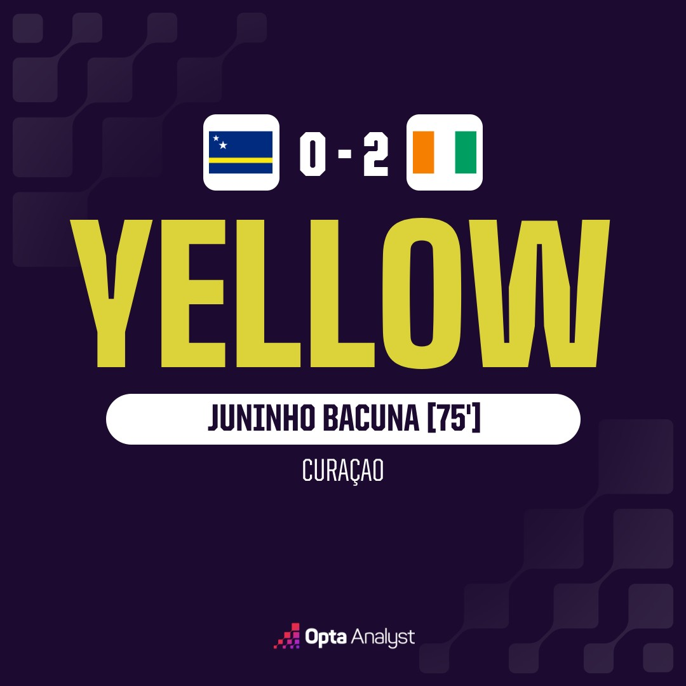
75'
Juninho Bacuna goes in on Christ Inao Oulaï and concedes a foul. The free-kick is not in a particularly dangerous area from Curaçao’s viewpoint, though.
74'
That was hopeful! A bit of a punt from Tahith Chong, who goes for goal from distance, but Yahia Fofana makes the save.
74'
Not much goalmouth action to speak of in this period of the game, with no attempts made from either side. This game could spark at any moment, however. It is Curaçao who have had more of the ball, controlling 64 per cent possession in the last 10 minutes.
72'
Joshua Brenet makes a run in behind but the Côte d'Ivoire defensive line were alert, and stepped up in time to catch them offside. That run just needed to be timed better.
67'
Substitution! Bazoumana Touré replaces Yan Diomande for Côte d'Ivoire as the manager shuffles the pack. Can Bazoumana Touré make an impression as this match continues?
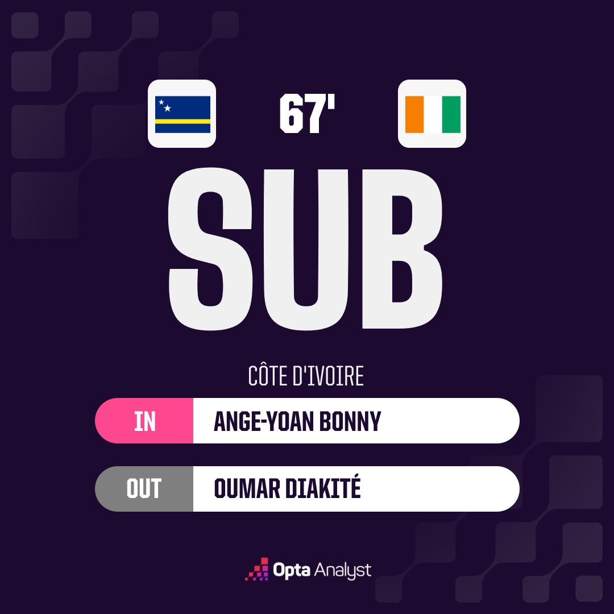
67'
Substitution! Elye Wahi replaces Nicolas Pépé for Côte d'Ivoire as the manager shuffles the pack. Can Elye Wahi make an impression as this match continues?
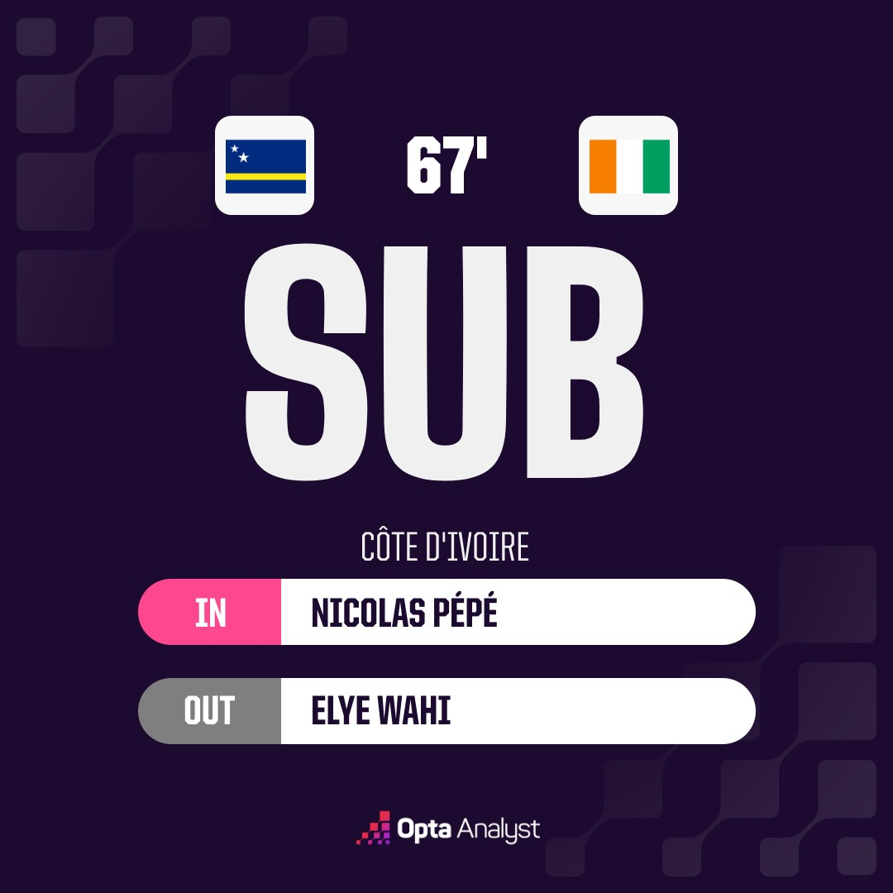
67'
Côte d'Ivoire are making a tactical change. Ange Bonny is leaving the field and in their place comes Oumar Diakité – we will soon see if this switch has the desired impact.
66'
With 25 minutes left to play, it’s a good chance to check in on the shot count. Côte d'Ivoire have mustered 6 so far, with 2 of those landing on target. On the other hand, Curaçao have gotten 6 of their 1 of attempts on target.
64'
Ibrahim Sangaré has assisted his first goal in the 2026 FIFA World Cup.
64'
Is that game over? Côte d'Ivoire are now well ahead, having extended their lead to 2 goals thanks to Nicolas Pépé’s effort. It’s now 2-0, and Curaçao face an uphill battle to get back into it.
64'
Nicolas Pépé has scored his second goal of the 2025 FIFA World Cup this edition, more than any other Côte d'Ivoire player.
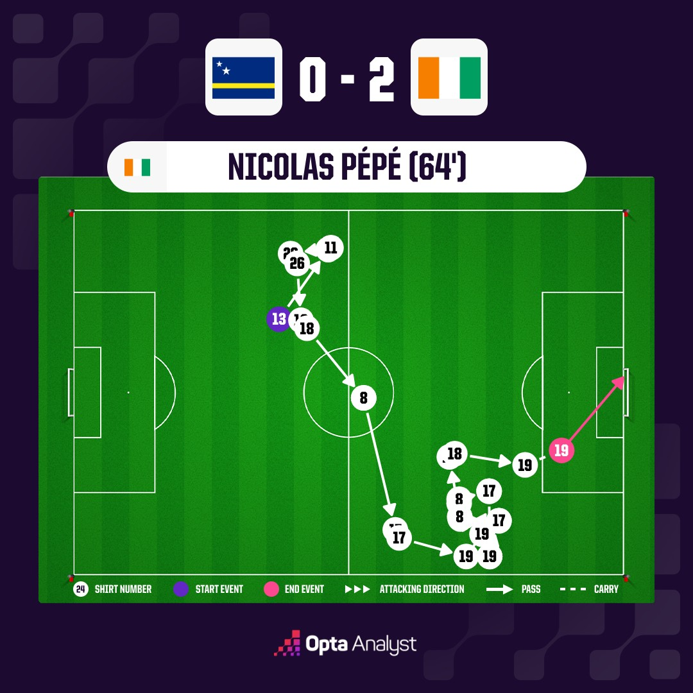
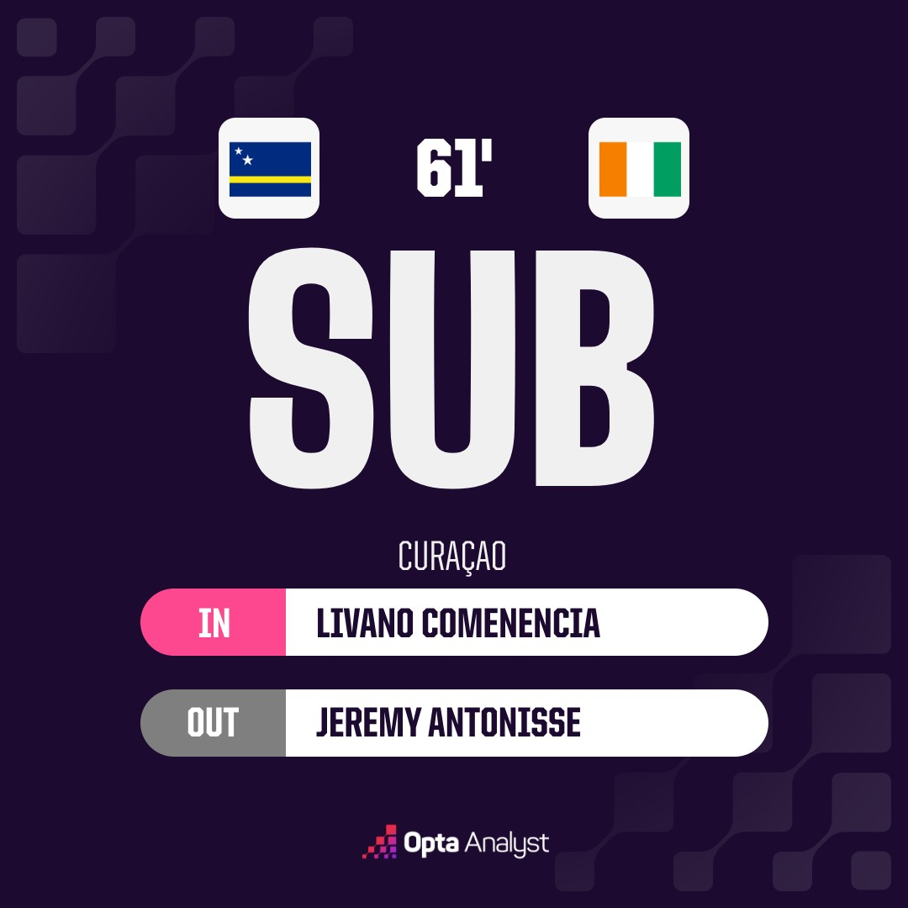
61'
Livano Comenencia’s match is over as Curaçao decide to make a substitution. Jeremy Antonisse enters the field in what looks like a tactical change.
57'
Juriën Gaari goes in on Christ Inao Oulaï and concedes a foul. The free-kick is not in a particularly dangerous area from Curaçao’s viewpoint, though.
56'
Despite trailing, Curaçao are showing real defensive grit, digging in and stopping further damage as they try to build a platform.
55'
That is a disappointing effort from Sherel Floranus, who went for glory but got their attempt wrong, and the shot sailed off target. A frustrating moment for Curaçao.
53'
Curaçao have a corner to defend now after Livano Comenencia diverts an attempt from Franck Kessie out of play. Can Côte d'Ivoire take this chance to get a good delivery in and really test their opponent’s defence?
53'
It has been 30 minutes since Côte d'Ivoire last attempted a shot in this game.
52'
Smart football from Côte d'Ivoire in this second period. They're keeping possession nicely with another patient build-up, content to manage their advantage while staying alert for counter-attacking opportunities.
49'
Jürgen Locadia goes in on Ibrahim Sangaré and concedes a foul. The free-kick is not in a particularly dangerous area from Curaçao’s viewpoint, though.
48'
Free-kick! A foul from Tahith Chong on Ibrahim Sangaré. It is well away from Curaçao’s goal, so it is unlikely to result in a chance for Côte d'Ivoire.
46'
Nicolas Pépé makes a run in behind but the Curaçao defensive line were alert, and stepped up in time to catch them offside. That run just needed to be timed better.
46'
Substitution! Christ Inao Oulaï replaces Amad Diallo for Côte d'Ivoire as the manager shuffles the pack. Can Christ Inao Oulaï make an impression as this match continues?
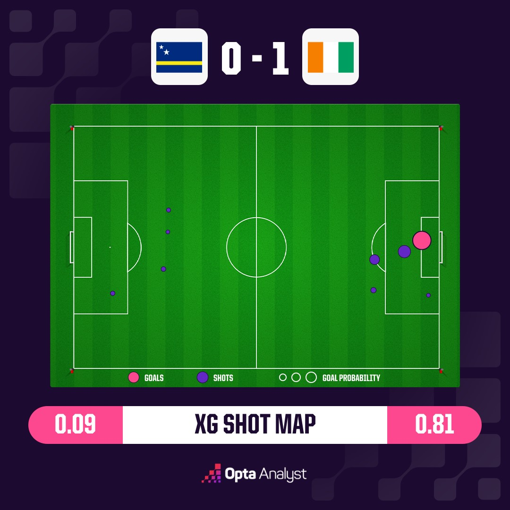
45+5'
The first half comes to a close and it’s Côte d'Ivoire who have the lead over Curaçao at Philadelphia Stadium, with the scoreline 0-1 at the interval. Will Curaçao turn this around after the break?
45+4'
Great defending from Côte d'Ivoire, who are staying organised and winning key battles to preserve their lead.
45+3'
Curaçao are racking up corners and free-kicks - they’re starting to dominate in dangerous areas.
45+3'
Juriën Gaari's effort is deflected out for a corner. Can Curaçao make anything of this set-piece?
45+2'
A foul from Ibrahim Sangaré on Leandro Bacuna sees Curaçao win a free-kick, but it is not in a dangerous position, so Côte d'Ivoire should be confident they can defend it easily enough.
45+1'
Despite trailing, Curaçao are showing real defensive grit, digging in and stopping further damage as they try to build a platform.
44'
MISS! A shot from Leandro Bacuna ends up being off target. They might have done a bit better with that one, but it remains Curaçao 0-1 Côte d'Ivoire.
43'
Franck Kessie goes in on Tahith Chong and concedes a foul. The free-kick is not in a particularly dangerous area from Côte d'Ivoire’s viewpoint, though.
40'
That is a disappointing effort from Tahith Chong, who went for glory but got their attempt wrong, and the shot sailed off target. A frustrating moment for Curaçao.
38'
In the last 15 minutes, it is Côte d'Ivoire who have dominated the ball, having seen 78.72% of the possession, yet they have not been able to go and turn that into a single shot, so there is no imminent sign of a goal.
37'
Côte d'Ivoire have had plenty of the ball in the last 15 minutes, with 81.63% possession compared to just 18.37 % for their opponents. However, there’s not been any goal to come from that possessional dominance just yet.
36'
Foul! A free-kick now in a dangerous area for Côte d'Ivoire, after Amad Diallo is fouled by Sherel Floranus. Can Côte d'Ivoire make the most of this opportunity?
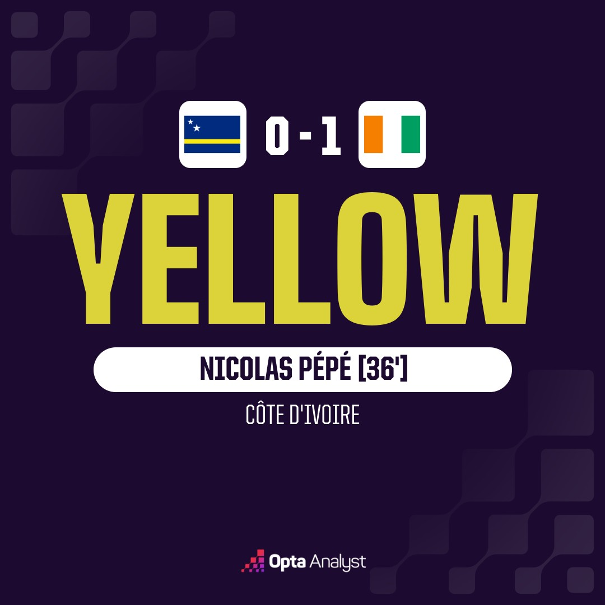
35'
That is a booking for Nicolas Pépé, who has received their first yellow card. They are not happy with the decision, but it is done now, and they will have to be careful for the rest of this game.
35'
A foul from Nicolas Pépé on Tahith Chong sees Curaçao win a free-kick, but it is not in a dangerous position, so Côte d'Ivoire should be confident they can defend it easily enough.
33'
A foul from Deveron Fonville on Amad Diallo sees Côte d'Ivoire win a free-kick, but it is not in a dangerous position, so Curaçao should be confident they can defend it easily enough.
33'
Not much goalmouth action to speak of in this period of the game, with no attempts made from either side. This game could spark at any moment, however. It is Côte d'Ivoire who have had more of the ball, controlling 76 per cent possession in the last 10 minutes.
33'
Despite trailing, Curaçao are showing real defensive grit, digging in and stopping further damage as they try to build a platform.
31'
A foul from Livano Comenencia on Yahia Fofana sees Côte d'Ivoire win a free-kick, but it is not in a dangerous position, so Curaçao should be confident they can defend it easily enough.
31'
Excellent defensive work from Côte d'Ivoire; their organization and success in key duels are effectively safeguarding their lead.
30'
It is a corner now to Curaçao, with Côte d'Ivoire somewhat hanging on here as they look to hold out for a positive result. Can Curaçao make something of this set-piece opportunity?
23'
MISS! The score remains 1-0, with Curaçao relieved after Côte d'Ivoire’s Amad Diallo goes for goal but sends their attempt off target. Not one to write home about, that one.
22'
Côte d'Ivoire are having plenty of the ball, with 71.98% possession in the last 15 minutes. However, they have been unable to transfer that possessional dominance into a goal during that period.
22'
Free-kick! A foul from Christopher Opéri on Joshua Brenet. It is well away from Côte d'Ivoire’s goal, so it is unlikely to result in a chance for Curaçao.
21'
A free-kick to Côte d'Ivoire, as Juninho Bacuna goes in and fouls Guéla Doué. However, Curaçao will not mind giving one away in this area too much, with plenty of distance to their goal.
18'
MISS! A shot from Amad Diallo ends up being off target. They might have done a bit better with that one, but it remains Côte d'Ivoire 1-0 Curaçao.
16'
Strong early signals from Côte d'Ivoire at the back — calm and commanding as they break up attacks with ease.
14'
No luck! Juriën Gaari takes on a shot that, had they got it right, might have been set to test the goalkeeper, but instead it is sent off target and Côte d'Ivoire come away unscathed.
12'
A free-kick to Côte d'Ivoire, as Juriën Gaari goes in and fouls Yan Diomande. However, Curaçao will not mind giving one away in this area too much, with plenty of distance to their goal.
10'
MISS! The score remains 1-0, with Curaçao relieved after Côte d'Ivoire’s Amad Diallo goes for goal but sends their attempt off target. Not one to write home about, that one.
8'
A foul from Juninho Bacuna on Guéla Doué sees Côte d'Ivoire win a free-kick, but it is not in a dangerous position, so Curaçao should be confident they can defend it easily enough.
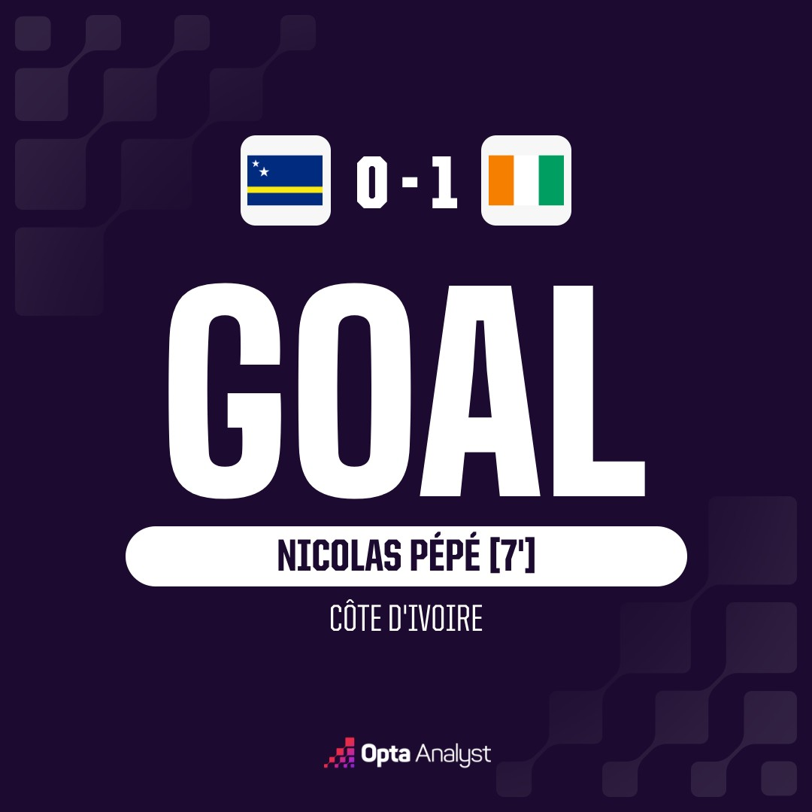
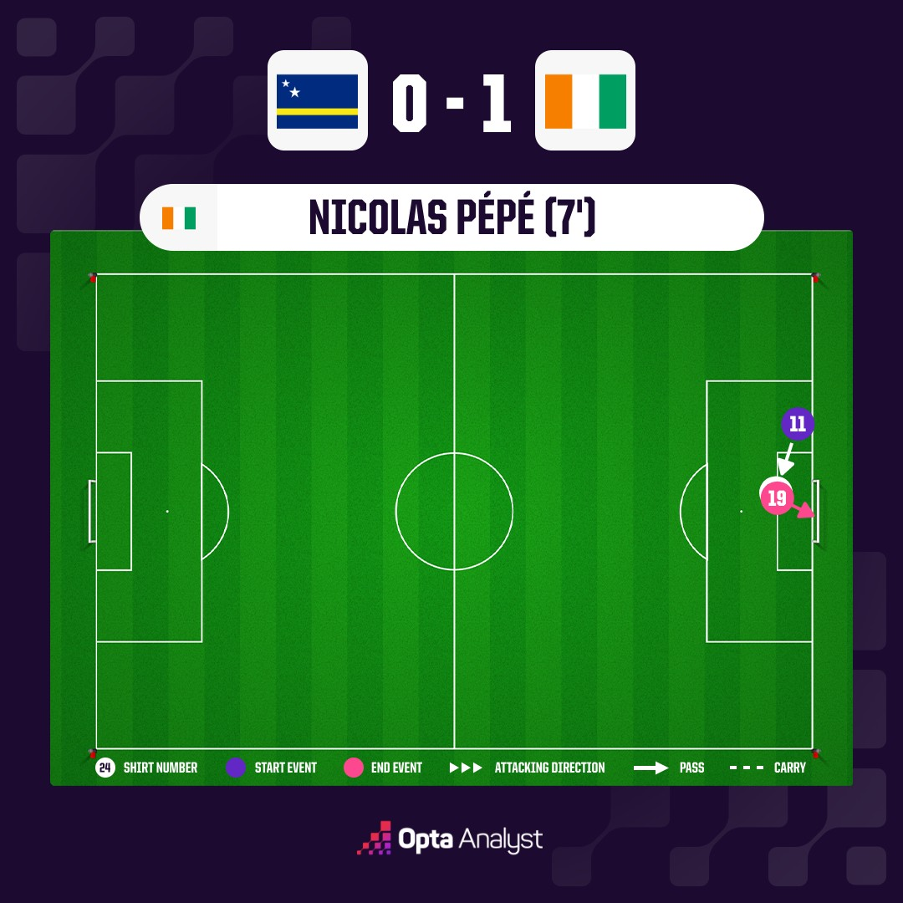
7'
Yan Diomande has assisted his first goal in the 2026 FIFA World Cup.
7'
Nicolas Pépé has scored his first goal in the 2026 FIFA World Cup.
7'
GOAL! Côte d'Ivoire are ahead early on! Nicolas Pépé applies the finish from inside the box and opens the scoring. What a start for Côte d'Ivoire, who lead 1-0.
6'
Free-kick! A foul from Armando Obispo on Ange Bonny. It is well away from Curaçao’s goal, so it is unlikely to result in a chance for Côte d'Ivoire.
2'
That was hopeful! A bit of a punt from Tahith Chong, who goes for goal from distance, but Yahia Fofana makes the save.
1'
And we are off! Strap in, folks, for this mouthwatering encounter between Côte d'Ivoire and Curaçao at Philadelphia Stadium.
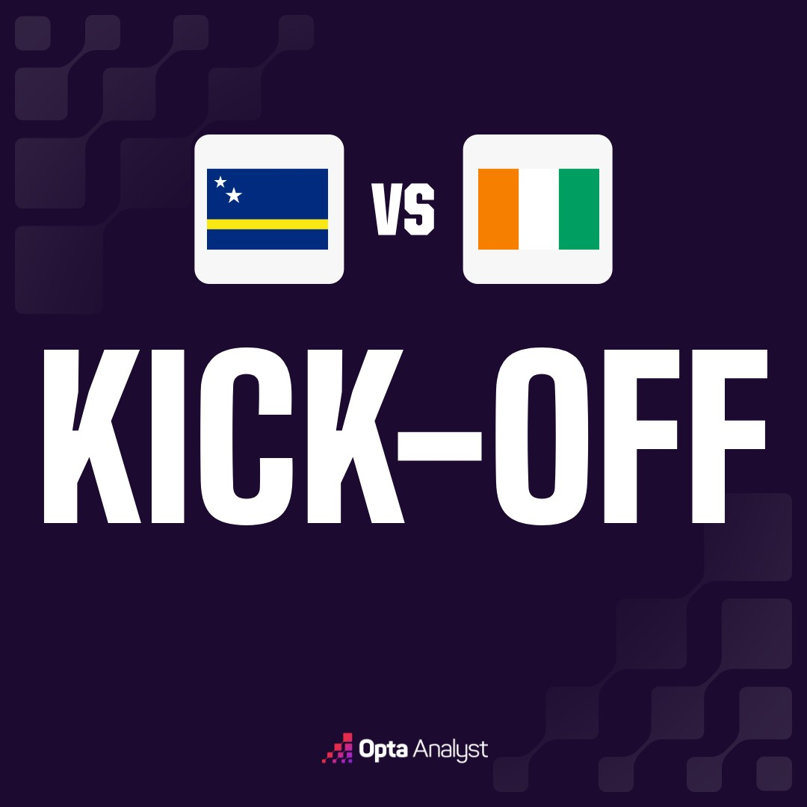
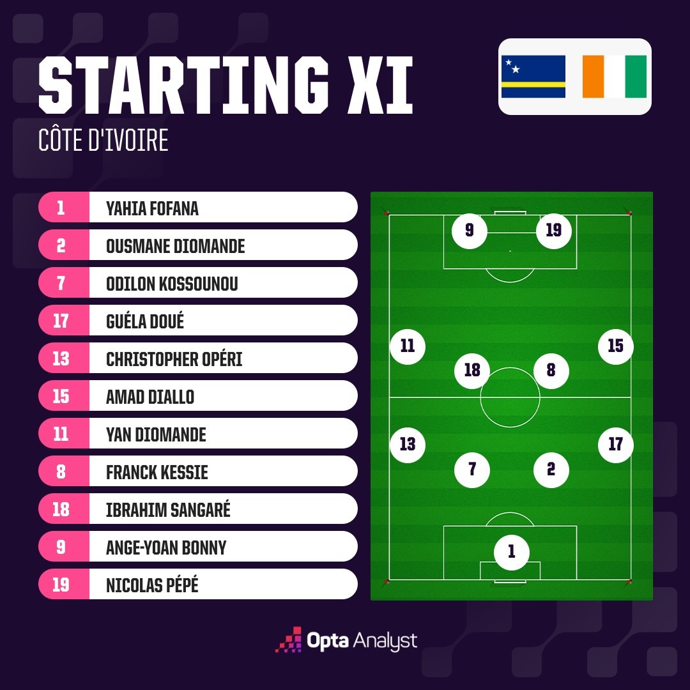
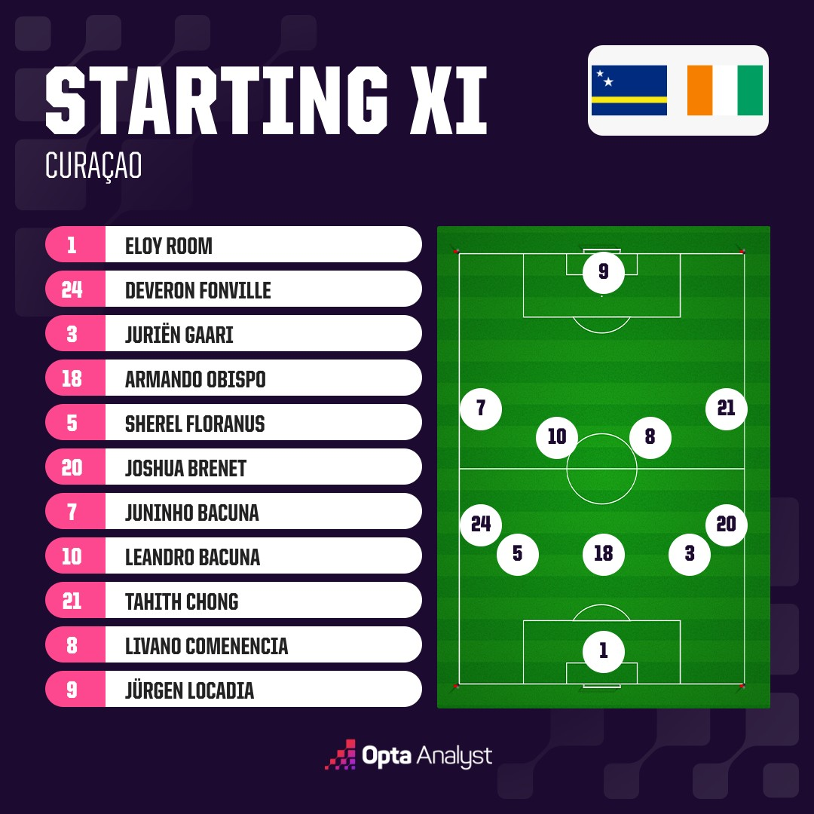
There have been 3 or more goals scored in total in each of Côte d'Ivoire's last 4 away games
Curaçao play Côte d'Ivoire for a FIFA World Cup group stage match at Philadelphia Stadium on Thursday with the Ivorian side looking to secure a place in the Round of 32.
Curaçao earned a point for the first time in the competition this season in their last group stage match, drawing 0-0 against Ecuador on June 20. In six games this year, they have one win, one draw, and four losses.
Côte d'Ivoire suffered a first competition loss of the year in a 2-1 defeat against Germany in their last group stage game, a June 20 clash at Toronto Stadium. Franck Kessie was the only player to net in the loss. In 2026, they have won five and lost two.
Côte d'Ivoire are second in the group on three points, while Curaçao's one point places them fourth. Côte d'Ivoire are currently in line for the Round of 32, while Curaçao are facing elimination.
Germany are atop the group on six points and have clinched their place in the Round of 32. Ecuador are still in contention for a round of 32 place, sitting third on one point.
Curaçao have been led by Livano Comenencia in World Cup play. The midfielder leads the team with one goal. Côte d'Ivoire's leading players in the final third have been Kessie and Amad Diallo, who have each scored once in this World Cup campaign.
Côte d'Ivoire have scored in each of their last 11 contests across all competitions. They have netted in every match since a friendly with Saudi Arabia in November 2025.
In their last six matches in all competitions, Curaçao have won one, drawn one and lost four. The Curaçao side scored seven and conceded 18 in that stretch, scoring first in two of the six contests. They had two first-half goals, while their opponents netted six times in the first 45 minutes. The Ivorian side have won four and lost two in their last six. The Ivorian side scored 11 and conceded six over that period, netting first in four of the six. They had five goals in the first half, while their opponents netted three times before the break.
-
General
Possession 36.7% 36.6663.3463.3% Possession lost in defensive half 20 202222 Possession lost in middle third 52 525151 Duels 89 899090 Duels success rate 50.6% 50.56246.66746.7% Aerial duels 17 171717 Aerial duels won 58.8% 58.82441.17641.2% Successful dribbles 12 1288 Fouls won 6 61111 Offsides 2 211 Corner awarded 4 466 -
Distribution
Passes 355 355624624 Long passes 30 303838 Long passes proportion (%) 8.5% 8.4516.096.1% Passing accuracy 83.1% 83.09989.42389.4% Passes in opponents' half 156 156307307 Passing accuracy in opponents' half (%) 71.8% 71.79585.01685.0% Total passes in the final third 73 73133133 Passing accuracy in final third (%) 67.1% 67.12378.94778.9% Forward passes 214 214358358 Forward passes (%) 60.3% 60.28257.37257.4% Through balls 1 133 Final third entries 33 334141 Penalty area entries 24 242727 Total open play crosses 9 91111 Crosses 15 151616 Crossing accuracy 33.3% 33.33318.7518.8% -
Attack
Goals 0 022 Shots 11 1177 Shots on target 2 233 Blocked shots 2 211 Headed shots 3 300 Shots outside the box 6 622 Shots inside the box 5 555 Shots accuracy excluding blocked shots 22.2% 22.2225050.0% Shooting accuracy 18.2% 18.18242.85742.9% Key Passes 9 966 -
Defence
Tackles 17 171616 Tackles success rate 64.7% 64.70656.2556.3% Clearances 17 171919 Interceptions 15 151212 Recoveries 44 444646 Attacking third recovery 3 333 Defensive third recovery 28 282626 Midfield third recovery 13 131717 Recoveries in attacking half (%) 6.8% 6.8186.5226.5% -
Discipline
Fouls conceded 11 1166 Yellow cards 2 211 Red cards 0 000